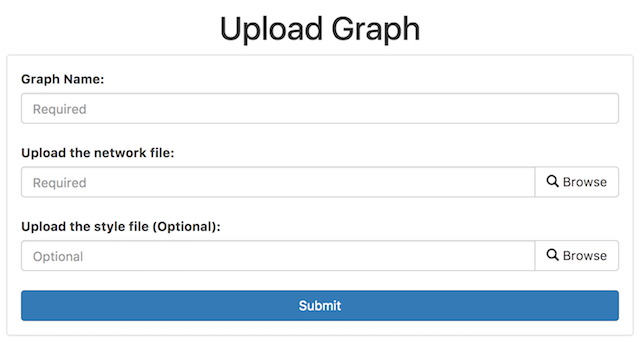

5. Uploading Graphs¶
GraphSpace provides 2 different ways to upload graphs:
- Via the REST API
- Via the Web Interface
5.1. Via the REST API¶
GraphSpace users can also upload graphs using GraphSpace’s REST API. Please refer to the Programmer’s Guide for more information.
5.2. Via the Web Interface¶
As an alternative to the REST API for uploading a graph, we provide a simple web interface for uploading individual graphs. Once the graph has been uploaded, GraphSpace will provide a unique URL through which the user may interact with the graph represented by the uploaded graph files.
If a user has an account and is logged in, this interface will upload the graph directly into the user’s account, much like using the REST API. If a user does not have an account or is not logged in, this upload functionality will provide a unique URL through which the user may interact with the graph represented by the uploaded file. Note: After 30 days, we will delete all graphs that are uploaded for unregistered users of GraphSpace.
5.2.1. Upload Graph Form¶

The upload graph form has three input fields:
Graph Name¶
The name of the graph. GraphSpace allows users to search graphs by their name. It is a required field.
Network File¶
The network file containing the graphs structure and data information in CYJS Format. It is a required field.
Style File¶
The network file containing the graphs style information in Stylesheet JSON Format. It is a optional field. If left empty, GraphSpace will use default style for displaying the graphs.
Default Graph Style¶
GraphSpace uses following default style for all graphs. The default style values are used when:
- The user does not upload a style file for the graph. OR
- The user uploads the style file which doesn’t overrides the default style values.
[
{
'selector': 'edge',
'style': {
'curve-style': 'bezier',
'line-style': 'solid',
'line-color': 'black'
}
},
{
'selector': 'node',
'style': {
'content': 'data(label)',
'shape': 'ellipse',
'background-color': 'yellow',
'border-color': '#888',
'text-halign': 'center',
'text-valign': 'center'
}
}
]